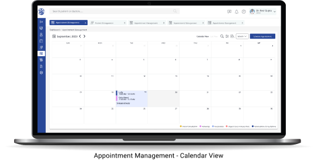
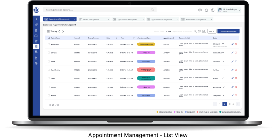
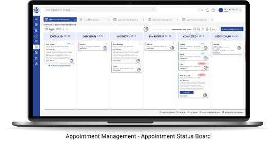

Simplifying appointment operations for providers, hospitals, and patients through a centralized, Kanban-based workflow.
A healthcare management system designed to streamline appointment operations for healthcare providers.
The Global Healthcare Platform (GHP) is a healthcare management system designed to streamline appointment operations for healthcare providers.
This project focuses on the Front Desk Staff, helping them efficiently manage patient appointments through a centralized Kanban-based workflow while keeping patients informed with automated notifications throughout the appointment journey.
Understanding who this platform serves, and why it matters to the business.
Improve operational efficiency by simplifying appointment management and reducing manual coordination.
Manage appointments quickly, track every patient's status, and communicate updates without switching between multiple tools.
Front desk staff managed appointments using fragmented workflows, making it difficult to organize daily schedules and keep patients informed.
Each pain point was mapped directly to a specific design response.
| Problem | Design Decision |
|---|---|
| Difficult to track appointment progress | Introduce a Kanban-based Appointment Board organized by appointment stages. |
| Manual patient communication | Trigger Automatic Patient Notifications whenever appointment status changes. |
| Appointment information spread across different views | Create a Centralized Appointment Dashboard with all essential information in one place. |
| Time spent searching for appointments | Add Smart Search & Filters to quickly locate appointments by patient, provider, or status. |
Selected screens from the Appointment Management module.



The prototype was walked through with 3 local healthcare providers before development, to test whether the Kanban-based workflow actually matched how front desk staff think about a day's appointments.
Centralizing status and communication removes the manual coordination that was slowing the front desk down.